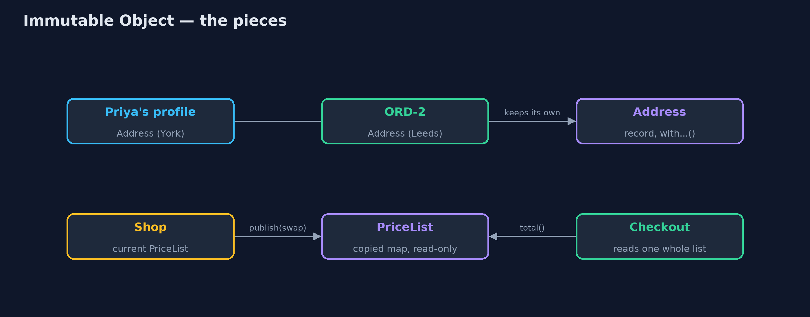
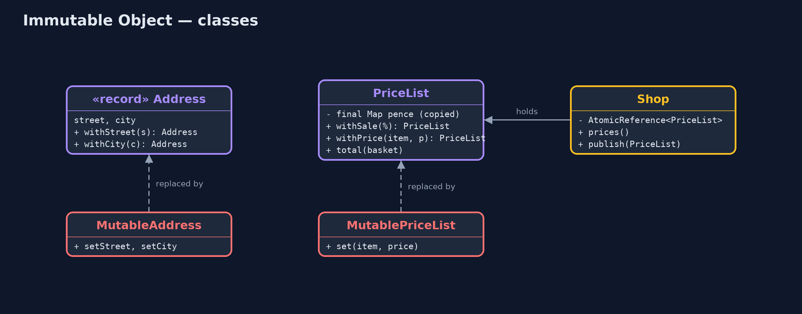
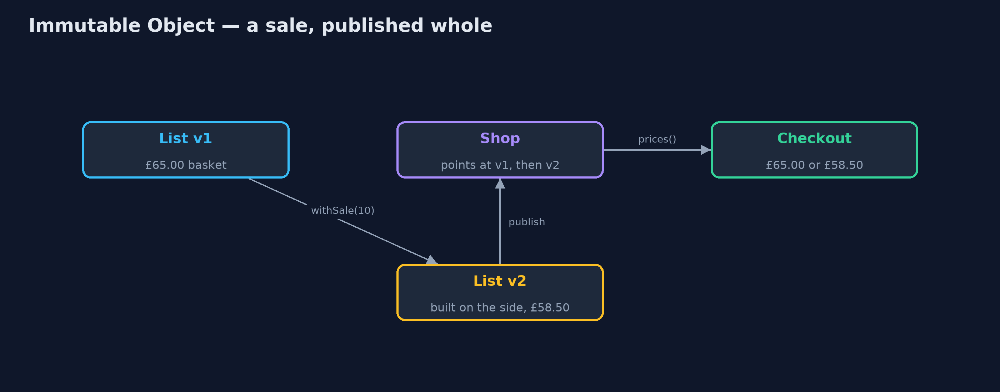
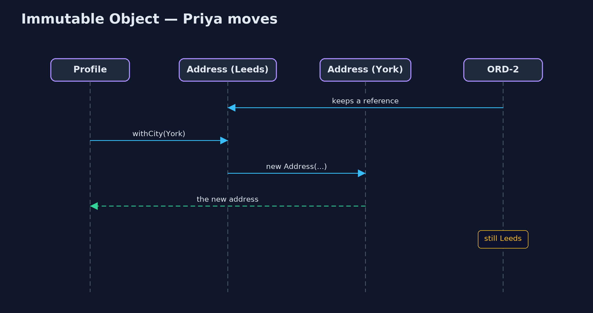

Immutable Object Pattern
src/main/java/com/jk/explore/immutable/
├── Address.java The pattern: an address that can never change
├── ImmutableObjectDemo.java The five acts: shared then changed, changed while being read, lost in a set, immutable objects, and the bill
├── MutableAddress.java Without the pattern: an address with setters, so anyone holding it can change it for everyone
├── MutablePriceList.java Without the pattern: one price list shared by everyone, changed one price at a time, in place
├── Orders.java Placed orders that remember where to send the parcel, holding the address object they are handed
├── PriceList.java The pattern: a price list that never changes once made
└── Shop.java Holds the current immutable price listAn object that can never change after it is made can be shared with anyone, read at any moment, and used as a key, because nobody can alter it behind your back.
An immutable object is one whose state cannot change after it is created. It has no setters, all its fields are final, and anything it holds that could change, such as a list or a map, is copied in and handed out read-only. To "change" it, you make a new object with the difference, and the old one stays exactly as it was.
That one rule removes a whole family of bugs: objects changed through another reference, objects seen half-changed, and objects lost inside a hash set. In Java, a record gives you most of it for free.
The idea in everyday terms
Think of a printed till receipt, and compare it with the whiteboard behind a café counter. Anyone with a cloth can rub out a price on the whiteboard, and a customer reading it at that moment might see half the old menu and half the new. A receipt never changes. If something about your purchase changes, the shop prints a new receipt, and the old one still says exactly what it said.
The scenario
The online store passes addresses and price lists around everywhere: an order keeps the address it ships to, checkout reads the price list, and a set records addresses with failed deliveries. All of them were ordinary objects with setters, shared by reference.
Run
./gradlew runThe demo tells the story in 5 acts, each printing exact numbers that the tests check:
| Act | What it shows |
|---|---|
| 1. Shared, then changed | ORD-1 holds Priya's profile address object; she updates her profile, and the placed order now ships to York. |
| 2. Changed while being read | A 10% sale is applied one price at a time; a checkout reading in between totals £62.00, neither £65.00 nor £58.50. |
| 3. Lost in a set | An address in a HashSet has its spelling tidied; the set no longer finds it, though its size is 1. |
| 4. Immutable objects | A new address leaves ORD-2 alone; a sale list is built on the side and swapped in whole (£65.00 then £58.50); copied input and set lookups hold. |
| 5. The bill | Changing 1 price in a 1000-item list makes a new list of 1000 entries; each changeable field needs a with method. |
Test
./gradlew test12 tests in DemoRunsTest, ImmutableTest. Every number the demo prints is asserted, and nothing depends on the clock, so every run gives the same result.
Technologies and versions
| Technology | Version | Used for |
|---|---|---|
| Java | 21 | the code (toolchain set in build.gradle) |
| Gradle | 9.2.1 (wrapper) | build and run, nothing to install |
| JUnit | 5.10.2 | the tests |
| videokit | repository tool | the narrated video and animation: Piper en_US-amy-medium, speed 0.8, longer pauses (the approved amy-slow voice) |
Learning Material
| Document | What it is for |
|---|---|
| Problem statement | the situation and what the project must show |
| Prerequisites | what you need to know first |
| Immutable Object, explained | the acts in prose |
| Session guide | a one-hour lesson with exercises |
| Animated walkthrough | the acts step by step, narrated |
| Spec | what this project must be true of |
The pattern in one picture
Holders share immutable objects freely; a change produces a new object, and the shop swaps the price list whole.

Where each piece sits
The immutable classes have no setters; every change method returns a new object.

How the data moves
Readers see the old list or the new list; there is no list in between.

Who calls whom, in order
The profile gets a new address; the order keeps the old one.

Video
video/immutable-object-pattern-explained.mp4 (with .m4a audio and .srt subtitles) is built by video/build_video.sh. Rendered media is not committed.
What it costs
- Every change is a copy. Changing one price in a 1000-item list makes a new list of 1000 entries.
- More methods. Each field you might change needs a
with...method that builds the new object. - Deep care. A final field that points at a mutable list is not immutable; the list must be copied in and handed out read-only.
- Some things must change. A shopping cart or a counter changes all the time; forcing it to be immutable can make code harder, not easier.
When this is too much
Objects that exist to be changed, such as a builder, a cart being filled or an entity tracked by a database library, are usually clearer as mutable objects with one owner. Make values immutable: addresses, prices, dates, identifiers, settings, messages.
Where you have already met this
String,Integer,LocalDateandBigDecimalare all immutable.- Java
records, andList.of,Map.of,List.copyOf. - The Value Object pattern in domain-driven design.
- Immutable state in React and Redux, and in functional languages.
Where this sits
This project is in foundational-design-patterns. It is the building block behind Value Object and Money.